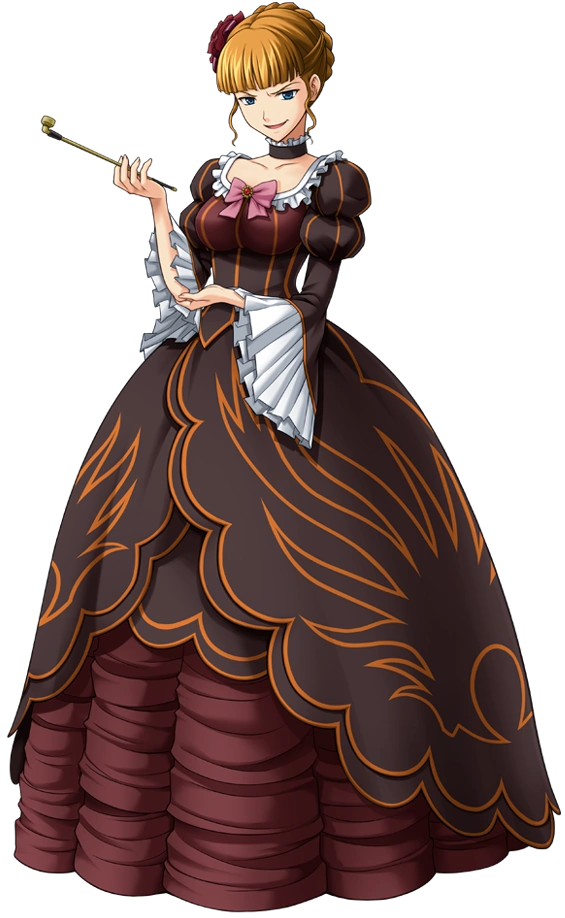
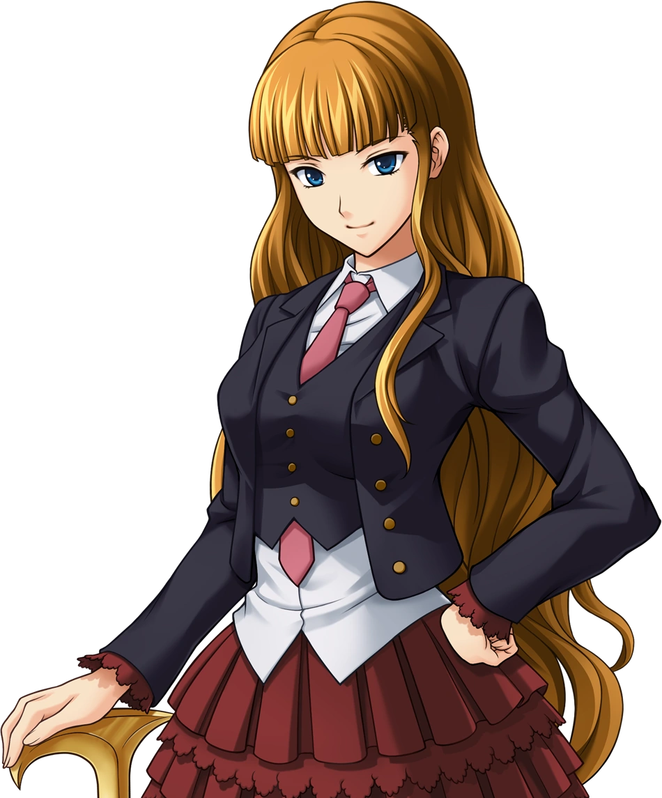
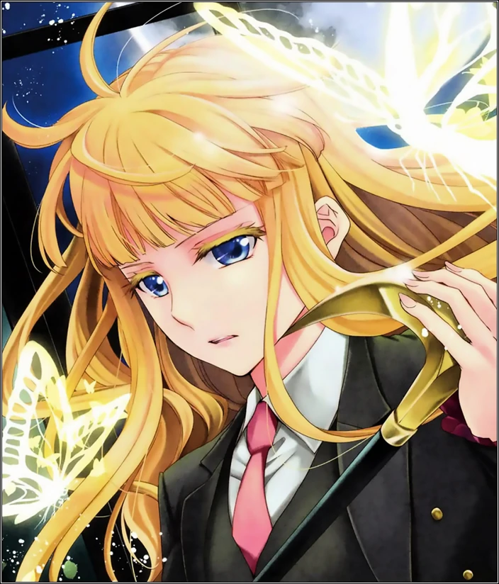
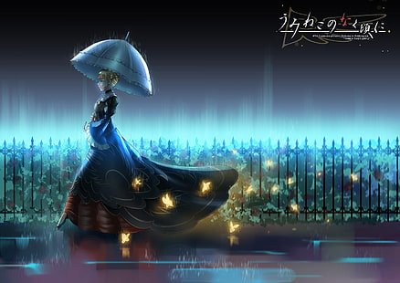
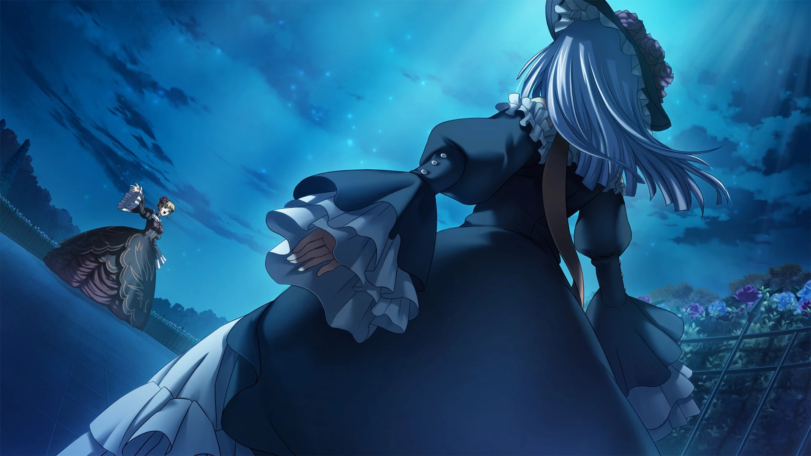
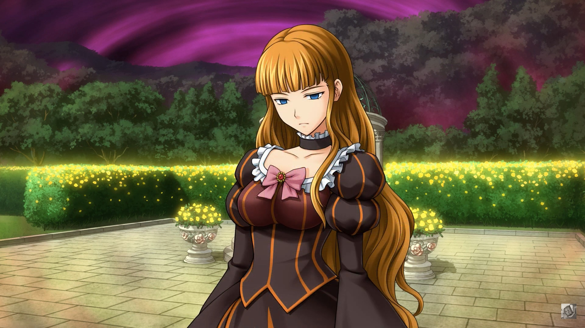
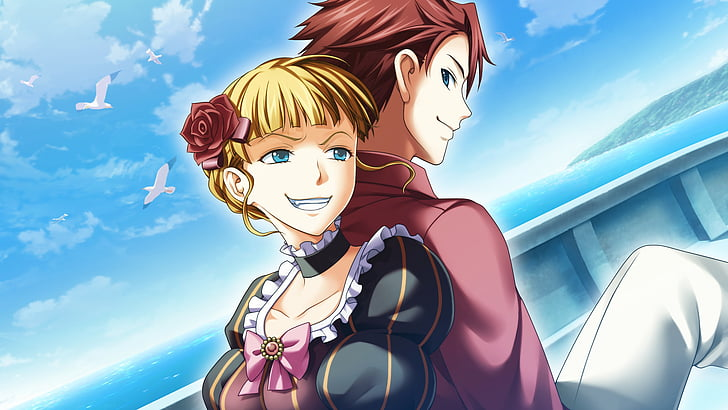

Беатриче
Я — Золотая Ведьма... Беатриче. Золотая королева демонов, что правит в Золотой Земле. Даже к проигрышной битве существует подход, подобающий для меня. И я имею право выбирать декорации для своей смерти.
«Попробуй побороться со мной, Баттлер Уширомия!!!»
- Беатриче против Баттлера
Беатриче (ベ ア ト リ ー チ ェ 'Беаториче') - Золотая Ведьма, которая часто посещает Роккенджиму и совершает странные убийства на церемонии своего воскрешения. Большая часть Umineko no Naku Koro ni сосредоточена вокруг её столкновений с Баттлером Уширомией, который утверждает, что все её убийства возможны с помощью человеческих уловок.
Профиль
Золотая ведьма, жившая тысячу лет.
Она превзошла человеческие возможности и, подобно демонам, иногда появляется в ответ на призыв людей, чтобы предложить свою силу в обмен на определенную цену.
Ей нравится чёрный чай и мороженое. Она ненавидит скуку и людей, отрицающих её существование.
Внешность
«Если бы у неё были нормальные чёрные волосы, я мог бы предположить, что это портрет моей давно умершей бабушки в расцвете сил. Однако у неё были красивые светлые волосы, и она совсем не выглядела по-японски».
- Баттлер впервые видит портрет Беатриче в «Легенде о Золотой Ведьме».
Беатриче - стройная красивая девушка с длинными золотыми волосами, которые чаще всего заплетены в косу, свёрнутую вокруг головы. У неё выразительные голубые глаза, светлая кожа и большая грудь. Ведьма одета в пышное европейское платье с открытой спиной, а в руках она держит курительную трубку, подчеркивающую образ властной женщины из высшего общества. Её платье постоянно меняет цвет с коричневого на тёмно-коричневый в различных адаптациях, становясь коричневым как в аниме, так и в игре для PS3, а тёмно-коричневым в оригинальном визуальной новелле.
Она также носит кольцо главы на среднем пальце левой руки. Иногда её также можно увидеть с золотым клинком. В «Симфонии золотых снов» её одежда украшена лентой в нижней части спины. В «Pachi-Slot Umineko no Naku Koro ni» у неё длинные ногти, отполированные до красного цвета.
Её человеческое тело носит рубашку с воротником, укороченный пиджак и галстук, мини-юбку с оборками, полосатые чулки и ботинки, а также обычно держит трость с головой орла в качестве ручки. В «Конце золотой ведьмы» она изображена в форме ведьмы, но с распущенными волосами. В «Рассвете золотой ведьмы» её «цыпленок» видится как ведьма, а её «старшая сестра» - как человеческая форма.
Личность
Беатриче высокомерная, гордая и властная. Она считается жестокой даже по меркам других ведьм, которые не рассматривают людей как нечто большее, чем фигуры на игровой доске. Бесконечная Ведьма унижала и убивала всех живых на острове Роккенджима в бесчисленных параллельных мирах самыми разными способами, включая такие "изысканные", как скармливание людям их родственников, приготовленных на их же глазах. Золотая Ведьма обладает привычкой громко смеяться и корчить жуткие, безумные гримасы. При этом она не равнодушна к тому, как Баттлер отреагирует на её действия. Одно время, Беатриче даже пыталась играть на жалости, заменив себя в игре ещё более безумной ведьмой, начав при этом показывать свою сострадательную сторону и обидчивость. Но всё это было лишь инсценировкой, или же попыткой показать истинные чувства, выдавая их за инсценировку. Было отмечено, что на самом деле ей отнюдь не доставляет удовольствия убийства людей, Беатриче считает, что её злодеяниям нет прощения. Всё чего она хочет - это признание со стороны Баттлера.
Характер ведьмы периодически терпел значительные изменения. Сложности ему добавляет и то, что она - концептуальное существо, сформировавшееся из личности и фантазий человека, из разных легенд о ведьме и духах острова Роккенджима, которые также связаны с другими людьми.
Ведьма очень умна, и с легкостью управляет чувствами людей. Даже более могущественные ведьмы признают её таланты. Фезарин Августус Аврора проявляет некоторое уважение к Беатриче, а для Бернкастель стало делом принципа одолеть Бесконечную Ведьму в игре.
Навыки
 Бесконечная ведьма, Беатриче обладает способностью управлять жизнью и смертью, а также может воскрешать и убивать людей, как ей заблагорассудится. Она также может ремонтировать повреждённые предметы и была советником по алхимии в семье Уширомия, которая, по слухам, подарила Кинзо десять тонн золота. Беатриче также показана парящей в воздухе, телепортирующейся и превращающейся в рой золотых бабочек. В 4-й игре показано, как она сжигает Кинзо до смерти, просто думая об этом. Она использует свою золотую трубку как жезл, а в «Сумерках Золотой Ведьмы» может превратить её в золотой дуэльный меч, как это видно, когда она сражается с Эрикой. Беатриче также обладает выдающейся стойкостью и защитой, что видно во время её дуэли с Вергилией, когда её пронзают несколькими копьями, но вскоре после этого она исцеляется.
Несмотря на эти способности, Беатриче обычно полагается на мебель, которая действуют за неё. Она использует колья Чистилища, чтобы совершить убийства на острове, а позже наняла Императорский гвардейский корпус сестер Чиест. Она также вызывает козлоголовых для выполнения основных задач, а Ронове выступает в качестве её главного дворецкого. Во время битвы с Вергилией Беатриче доказала свою способность вызывать гигантов, которые используют щиты Гефеста для защиты. Она также может вызвать две огромные 100-метровые «Плечевые башни» с 360 пушками, каждая из которых стреляет копьями света. Она также вызвала щит Эгиды в бою в качестве абсолютной защиты, который, по сути, защищал от Божественного Копья Гунгнира Вергилии.
У неё была брошь-бабочка, которая может гарантировать настоящую любовь, которую она подарила Шаннон после того, как разрушила зеркало духа.
Как гейм-мастер, Беатриче может использовать Красную Истину, Синюю Истину и, скорее всего, Золотую Истину.
Предыстория
На «Пиру Золотой Ведьмы» показано детское прошлое Беатриче, где её называли «принцессой». В один прекрасный день она разбила вазу у безымянного мастера. Вергилия, нынешняя Беатриче в то время, помогла ей починить вазу с помощью своей магии. Очарованная, «принцесса» попросила Вергилию стать её учителем, обучаясь и в конечном итоге получив титулы Бесконечной и Золотой Ведьмы. Беатриче утверждает, что впоследствии она жила веками и встретила Кинзо, который влюбился в неё и продал ей свою душу за 10 тонн золота. Поскольку он так её любил, он запечатал её в клетке из плоти, и она была освобождена, когда эта клетка была уничтожена Розой.
Через некоторое время после вышеупомянутых событий, когда Шаннон сомневалась в своих отношениях с Джорджем, Беатриче дала ей золотую брошь в виде бабочки в обмен на уничтожение зеркала в храме. Позже они с Шаннон часто вместе пили чай. Она также подружилась с Марией, которая позже стала её ученицей. Вместе они создали такую мебель, как Сакутаро, и основали волшебный компендиум Mariage Sorciere. Она также выполняла магию для Марии перед доктором Нанджо, Каноном, Шаннон, Генджи и Кумасавой.
В какой-то момент после этих вышеупомянутых событий Беатриче спланировала резню Роккенджиме, сделала и создала неопределенное количество вариантов убийств, где она была виновницей. Её единственными известными вариантами были «Легенда о Золотой Ведьме», «Дебют Золотой ведьмы» и, наконец, «Земля Золотой Ведьмы», которая так и не была раскрыта, поскольку затерялась в море. В 1986 году Беатриче приводит в действие свой план.
Бесконечное количество вариантов убийства на Роккенджиме
Отношения
Все
Семья Уширомия
- Кинзо Уширомия (призыватель)
- Баттлер Уширомия (соперник, противник, мебель/раб, союзник, любовный интерес/муж)
- АНЖ-Беатриче (преемница, союзник, противник)
- МАРИЯ (ученица, лучшая подруга)
- Роза Уширомия (враг)
- ЕВА-Беатриче (преемница, противник)
Мета-мир
- Бернкастель (друг, враг)
- Лямбдадельта (друг, союзник)
- Колья Чистилища (мебель, творения)
- Ронове (мебель, дворецкий)
- Корпус Императорской Гвардии сестер Кристер (мебель)
- Флаурос (мебель, творение, бывший враг)
- Вергилия (наставник, предшественница)
- Эрика Фурудо (соперница)
- Беато Младшая(половина раздвоенного я, Беатриче, рожденная, чтобы любить Баттлера)
- Беато Старшая (половина расколотого я, Беатриче по легенде, которую Кумасава рассказала)
- Зепар (друг)
- Фурфур (друг)
- Сакутаро (друг)
- Чёрный Баттлер (возможное создание, противник, соперник)
Спойлеры
- Шаннон (альтернативный образ, знакомый)
- Канон (альтернативный образ)
- Клер Во Бернардус (прототип, альтернативная личность)
- Саё Ясуда (истинная форма / личность)
- Лион Уширомия (альтернативное существование из Фрагмента Чуда)
Баттлер Уширомия
Беатриче выступает против антимагической позиции Баттлера и делает всё возможное, чтобы заставить его подчиниться и принять магию. Ей нравится видеть, как Баттлер плачет и изо всех сил пытается сформировать теории, даже однажды унизив его, превратив в мебель.
Мария Уширомия
Мария искренне верит в Беатриче и любит играть с ней, когда она посещает остров. Беатриче научила Марию всем видам магии, оказывая ей помощь в «Альянсе Золотой Ведьмы», позволяя Марии отомстить и постоянно пытать Розу.
Шаннон
Шаннон - одна из немногих, кто активно противостоит Беатриче, поэтому Беато любит оскорблять ее любовь с Джорджем и всегда напоминает ей, что она мебель.
История
Арка вопросов
Легенда о Золотой Ведьме
Беатриче не видно на протяжении большей части эпизода, хотя её присутствие ощущается из-за огромного портрета в холле особняка Уширомия, слухов, окружающих её существование, и золотых бабочек. В аниме-адаптации Беатриче появляется под дождём с зонтиком. Она даёт Марии зонтик и письмо, используя её, чтобы объявить о планах совершения убийства, если эпитафия ведьмы не будет раскрыта.
Беатриче впервые появляется на чаепитии, давая о себе знать, когда Баттлер заявляет, что её не существует, потому что на самом деле её никто не видел. Даже столкнувшись с самой Золотой Ведьмой, Баттлер всё ещё отказывается принять её, и поэтому Беатриче бросает ему вызов в игре, чтобы он смог доказать, что убийства были возможны для людей. Игра должна продолжаться вечно, пока одна из сторон не сдастся.
В «???» Беатриче приглашает леди Бернкастель присоединиться к своей игре, которая решает стать её противником и помочь Баттлеру.
Дебют Золотой Ведьмы
Перед семейной конференцией 1986 года Беатриче помогает Шаннон и Канону в их стремлении обрести настоящую любовь. Шаннон приказывают уничтожить зеркало внутри святилища, которое ограничивает власть Беатриче, а слуге в качестве награды даётся волшебная брошь-бабочка, которую она использует для построения отношений с Джорджем. Затем Канон берёт брошь и использует её, когда идёт к Джессике в школу и притворяется её парнем, а затем уничтожает его, когда Беатриче насмехается над ним.
Как только начинается семейная конференция 1986 года, Беатриче становится 19-й гостьей, чтобы опровергнуть утверждение Баттлера о том, что Беатриче не существует, потому что на самом деле её никто не видел.
Таинственный 19-й гость, появившийся на семейном собрании. Она использует то же имя, что и Золотая Ведьма, давшая золото Кинзо. Причины и цели её приезда неизвестны. Её провели в комнату для почётных гостей, которую никому не разрешили использовать.
Позже Беатриче передаёт письма Марии и Розе, объявляя о своих планах совершить убийства, как и в предыдущей игре. Ночью в часовне, существование Беатриче признают взрослые из семьи Уширомия, ставшие жертвами первых сумерек.
В метамире Баттлер и Беатриче спорят об убийстве в закрытой комнате в часовне. Когда Баттлер не строит никаких теорий из-за недостатка информации, Беатриче вводит Красную Истину, где всё, что сказано красным, является абсолютной истиной. Беатриче излагает несколько утверждений, которые делают убийства в часовне возможными для людей, а Баттлер связывает всё это с 19-м человеком X. Продолжая свои убийства, Беатриче вызывает Козлоголовых и Семь кольев Чистилища, чтобы убить за неё. Беатриче предлагает больше красных истин среди бесчисленного множества проявлений магии, но Баттлер не может придумать никаких достоверных теорий и отказывается от попыток отрицать ведьму. Баттлер на игровом поле также отказывается от попыток найти виновника, когда Роза продолжает возлагать вину на слуг.
В 00:00 Баттлер встречает Беатриче в кабинете и подчиняется ей. Беатриче обращается с Баттлером как с рабом, таскает его голым и скованным, как собаку. Затем Беатриче устраивает грандиозную вечеринку на Хэллоуин для толпы демонов-коз, которые пожирают Баттлера и других выживших.
Во время чаепития она готовит особый банкет для Розы, давая ей еду, приготовленную из крови и плоти ее братьев и сестер, и головы Марии, пытаясь заставить её сдаться. Баттлер, которому противна эта сцена, восстанавливает свою волю к битве и снова противостоит Беатриче.
В «???» Беатриче также приглашает на свою игру леди Ламбдадельту, её защитницу и союзницу против Бернкастель. Ламбдадельта, указывает на то, что Беатриче сделала это с Розой нарочно, чтобы Баттлер восстановил свою волю к борьбе.
Пир Золотой Ведьмы
Можно заглянуть в прошлое Беатриче, где, будучи маленькой девочкой, она захотела стать ведьмой, после того как увидела, на что способна её учительница Вергилия.
Беатриче продолжает свою игру с Баттлером и представляет ещё один из своих предметов мебели: Ронове, который действует как дворецкий Беатриче. На игровом поле взрослые рассказывают о слухах, что Беатриче жила в скрытом особняке в лесу, а Роза объясняет, что Беатриче действительно существовала, а она убила её давным-давно. Пока Роза рассказывает свою историю, Беатриче показывает те же события Батлеру.
.jpg) Беатриче была связана с островом Кинзо и покончила с собой, чтобы сбежать. Кинзо взял её душу и связал её с человеческим телом. Беатриче потеряла воспоминания и жила в скрытом особняке Кувадориан. 19 лет назад Роза встретила в Кувадориане человека по имени Беатриче, которая мало знала о внешнем мире и считала лес опасным, потому что там жили волки. Роза заверяет её, что волки на самом деле не живут в лесу, и Беатриче идёт с ней, чтобы увидеть внешний мир. Они спускаются к обрыву с видом на океан, после чего Беатриче, подскользнувшись и упав на землю, умирает. Затем душа Беатриче освобождается, и она благодарит напуганную Розу за то, что освободила её. В мета-мире Беатриче красным подтверждает, что она действительно существовала как человек на Роккенджиме, и что на острове существует не более 18 человек. События «Реквиема Золотой Ведьмы объясняют», что человеческая Беатриче, которая умерла в тот день, была дочерью Кинзо от Беатриче Кастильони и матерью Лиона Уширомии.
Беатриче была связана с островом Кинзо и покончила с собой, чтобы сбежать. Кинзо взял её душу и связал её с человеческим телом. Беатриче потеряла воспоминания и жила в скрытом особняке Кувадориан. 19 лет назад Роза встретила в Кувадориане человека по имени Беатриче, которая мало знала о внешнем мире и считала лес опасным, потому что там жили волки. Роза заверяет её, что волки на самом деле не живут в лесу, и Беатриче идёт с ней, чтобы увидеть внешний мир. Они спускаются к обрыву с видом на океан, после чего Беатриче, подскользнувшись и упав на землю, умирает. Затем душа Беатриче освобождается, и она благодарит напуганную Розу за то, что освободила её. В мета-мире Беатриче красным подтверждает, что она действительно существовала как человек на Роккенджиме, и что на острове существует не более 18 человек. События «Реквиема Золотой Ведьмы объясняют», что человеческая Беатриче, которая умерла в тот день, была дочерью Кинзо от Беатриче Кастильони и матерью Лиона Уширомии.
Во время первых сумерек Беатриче встречает Вергилию, которая хочет вернуть свои силы и титул из-за неправильного обращения Беатриче с Бесконечной магией. Однако Вергилия терпит поражение, а Беатриче продолжает свои убийства. Тем не менее, Вергилия прибывает в мета-мир и действует как советник Баттлера против Беатриче.
Ева в конце концов решает эпитафию, а Беатриче берет молодое «я» Евы и передает ей главенство и титулы Золотой и Бесконечной Ведьмы, окрестив её ЕВА-Беатриче. ЕВА совершает убийства вместо Беатриче, и Беатриче берёт прозвище Беато, так как она передала своё имя.
Когда ЕВА использует свои вновь обретённые силы, чтобы убивать Розу и Марию снова и снова, Беато смеется над их смертью, и Баттлер даёт ей пощечину. Он не желает продолжать игру, если Беато собирается так смеяться над убийствами его семьи, поэтому Беато милостиво убивает Розу и Марию, одновременно говоря, чтобы ЕВА смягчила свою жестокость. Баттлер всё ещё не находит этого достаточным, поэтому Беато предлагает Ронове занять её место, когда она покидает мета-мир, стремясь стать хорошей ведьмой.
Затем Беато оживляет Шаннон и воссоединяет её с Джорджем, но они оба оказываются убиты ЕВОЙ и её собственной мебелью. Затем Беато воскрешает Канона в виде призрака и отправляет его проводить ослеплённую Джессику в гостиную, а ЕВА пытается убить их обоих. Беато защищает гостиную всеми силами, выдерживая атаки золотого лука, и из-за сестёр Чиест превращается в просто бьющееся сердце. Затем ЕВА втягивается в мета-мир Баттлером, который хвалит Беато за то, что она держалась и доказала, что она в конце концов хорошая ведьма.
Беато помогает Баттлеру найти доказательства, которые можно использовать против ЕВА, и после ожесточённых дебатов Баттлер оказывается скован паутиной красной истины ЕВЫ и не может выдвигать теории. Беато жертвует собой, отвергая ведьм Красной Истиной, и Баттлер закрывает уши, пока мета-мир исчезает. Затем Баттлер и Беато воссоединяются в Золотой Земле, где их ждёт семья Уширомия и вся мебель. Баттлера просят подписать документ, признающий Беато настоящей ведьмой, и он понимает, что Беато обманывала его всё время. Сбросив фарс, Беато показывает, что она действительно притворялась хорошей ведьмой, чтобы Баттлер поверил в неё. Их обсуждение прерывается, когда Энж внезапно вторгается в мета-мир.
Альянс Золотой Ведьмы
Во время четвертой игры Беато заставляет Кинзо выйти из своего кабинета, чтобы совершить убийство, пытаясь отговорить Баттлера от его утверждения о том, что Кинзо всё это время мёртв и его место занимает 18-й человек X. Она также даёт Баттлеру возможность использовать Синюю Истину, позволяя ему строить правильные теории. Во время игры Кинзо даёт тесты четырём кузенам, и Беатриче оживает после церемонии Кинзо. Затем Беато появляется лично, чтобы провести тест Баттлера, прося его выбрать между своей жизнью, жизнью _____ или жизнями всех остальных. Баттлер не воспринимает это всерьёз и помещает имя Беатриче в пустое место, а Беато вместо этого просит Баттлера вспомнить свой грех; его грех стал причиной смерти всех на Роккенджиме. Баттлер не может вспомнить, и Беатриче разочарованная уходит. Затем Беатриче убивает Кинзо, сжигая его заживо, оставляя Баттлера одного в качестве последнего выжившего на острове.
В мета-мире Беатриче просит Баттлера ещё раз подумать о своём грехе, прося его повторить «Баттлер Уширомия родился от Асуму Уширомия» красным. Баттлер не может этого сделать, и Беатриче предполагает, что Баттлер на самом деле не может быть внуком Кинзо, поскольку она открыла игру, чтобы сражаться с этим человеком. Баттлер не может принять, что Асуму не его биологическая мать, и исчезает из мета-мира. Беатриче также исчезает из мета-мира, отправляясь в Золотую Землю и планируя остаться там навсегда с Марией.
Энж отправляется в Золотую Землю и пытается заставить Беато уйти и возобновить игру с Баттлером. Она воскрешает Сакутаро, что Беато не могла сделать, и Мария воссоединяется со своим любимым львом, покидая Золотую Землю и заставляя Беато вернуться в мета-мир. Бернкастель и Ламбдадельта, которые выступали в роли зрителей в игре, выводят Баттлера из отчаяния, и Энж жертвует собой, чтобы сказать ему, что он всё ещё сын Рудольфа, что делает Баттлера внуком Кинзо и имеет право сразиться с Беатриче. Энж разорвана в клочья, и Баттлер клянется вовлечь Беатриче в последнюю дискуссию.
В «Чаепитии» Баттлер и Беатриче спорят о загадках первых четырёх игр. Баттлер по-прежнему считает, что Кинзо был мёртв всё это время и что его место занимает 18-й человек X. Беато изначально демонстрирует слабую оппозицию синим кольям правды Баттлера, и, когда Баттлер просит её сражаться в полную силу, Беатриче использует красный цвет, чтобы подтвердить, что Кинзо действительно мёртв и на Роккенджиме не более 17 человек, тем самым сводя на нет все теории Баттлера.
После очередного яростного обмена красными и синими цветами Беатриче оказывается на коленях, не в силах разрушить синие истины Баттлера. Она использует последние силы, чтобы представить Баттлеру последнюю загадку, говоря, что Баттлер совсем один на острове, и все же Беато убьёт его: «Кто я?»
Дух Беато обнимает Баттлера, когда он клянется, что решит эту загадку и убьёт её.
Арка ответов
Конец Золотой Ведьмы
Беатриче впадает в кому, израсходовав весь свой дух в борьбе с Баттлером. Баттлер пытается найти мирный способ убить её, и с её отсутствием Лямбда становится игровым мастером. Во время игры Нацухи боится, что члены семьи обнаружат, что она и Краусс скрывали смерть Кинзо, и ей помогает Беатриче как фигура на доске. Она сражается с Эрикой Фурудо и Айзерне Юнгфрау, пытаясь помешать им уничтожить дух Кинзо, когда они атакуют кабинет. Она и её мебель также пытаются помочь Нацухи, пряча трупы жертв первых сумерек.
Позже Лямбда проводит судебное заседание в мета-мире, пытаясь обвинить Нацухи в виновности. Фигура Беатриче изо всех сил пытается защитить Нацухи, но ей это не удается, и её разрывают козлоголовые. Баттлер также пытается защитить Нацухи, но он пронзён красным длинным мечом Дланор. После того, как суд закончился и все ушли, настоящая Беатриче подходит к Баттлеру, благодарит его за попытку сохранить целостность её игры и исчезает.
Рассвет Золотой Ведьмы
Баттлер открыл правду и стал гейм-мастером, используя свои силы, чтобы попытаться воскресить Беатриче. Однако вместо этого она возрождается как часть Беато (Беато Младшая), которая ведет себя очень по-доброму и невинно, без той надменной личности, которая была у оригинальной Беатриче. Беато Младшая помогает БАТТЛЕРУ в его игре против Эрики, и позже становится свидетелем того, как он попадает в ловушку логической ошибки. В разгар игры Беато Младшая пытается понять, как быть такой же, как настоящая Беатриче, и в конце концов встречает Беато Старшую. Две Беато пытаются узнать, как стать такими же, как оригинальная Беатриче, и они участвуют в любовном испытании, проводимом демонами Зепар и Фурфур.
В конце любовного испытания, две Беато сливаются и Беатриче полностью оживают, направляясь в мета-мир, чтобы прервать свадьбу Эрики и коматозного БАТТЛЕРА. Беатриче находит способ для БАТТЛЕРА избежать его логической ошибки, и они вдвоём вовлекают Эрику в финальную дискуссию, где, даже если Эрика присоединится к людям на острове, на Роккенджиме всего 17 человек.
В «Чаепитии» Беатриче и БАТТЛЕР женятся.

Свадьба БАТТЛЕРА и Беатриче
Реквием Золотой Ведьмы
Истинное происхождение Беатриче раскрывается в этом эпизоде. После смерти в «Конце Золотой Ведьмы» Беатриче возвращается в теле Клер Во Бернард, чтобы признаться в своих преступлениях Уилларду и Лиону. Она рассказывает свою историю о том, что когда-то она была молодой служанкой по имени Ясу, и о борьбе, через которую она прошла после того, как влюбилась и шесть лет ждала Баттлера. После этого она вступает в свою последнюю битву с Уиллардом, который раскрывает её тайны и отвечает на её вопрос: «Кто я?». Таким образом, Беатриче наконец может умереть и упокоиться.
В «Чаепитии» Беатриче пытается устроить резню на Роккенджиме, которую она изобразила в своих с бутылях сообщениями. Она дает Марии письмо и предлагает семье решить её загадку. Братья и сестры решают эпитафию и идут в золотую комнату, где Беатриче раскрывает свои планы и сдается им. Однако между взрослыми возникает драка, заканчивающаяся тем, что они убивают друг друга, за исключением Рудольфа и Кирие. Затем Беатриче, по-видимому, застрелена Кирие, которая идёт с Рудольфом, чтобы убить оставшихся членов семьи.
Сумерки Золотой Ведьмы
В этой арке Беатриче из «Рассвета Золотой Ведьмы» появляется как 19-й человек на Роккенджиме снова, как часть игры БАТТЛЕРА для Энж.
Показаны последствия инцидента в Роккенджиме, где 6 октября 1986 года Беатриче пережила выстрел от Кирие и ведёт Баттлера через подземный ход Кувадориана к скоростному катеру. Беато дает Баттлеру золотой слиток, который она взяла из золотой комнаты, и хочет, чтобы Баттлер оставил её, но он берёт её в лодку, чтобы они могли вместе исследовать мир. Когда они едут к соседнему острову, Беато отвлекает Баттлера поцелуем, вскоре прыгает в океан и, используя золотой слиток, отягощает себя. Беато хочет утонуть, полагая, что она непригодна для жизни в человеческом мире после совершения стольких грехов, но Баттлер ныряет за ней, не желая оставлять её в покое. Они обнимаются и плывут на дно океана.
Другие появления
Беатриче - игровой персонаж в файтинге «Симфония золотых снов».
Интересные факты
Оригинальное имя Беатриче не определено, учитывая, что прежнее имя Вергилии тоже было Беатриче, и это имя было передано Беатриче вместе с титулом Бесконечной Ведьмы. Когда Беатриче была молодой, Вергилия называла её принцессой, хотя неизвестно, было ли это титулом или прозвищем. Когда Беатриче передаёт своё имя и титулы ЕВА-Беатриче, Баттлер продолжает называть её «Беато». Это прозвище, которым он и Мария ранее называли её, когда она требует, чтобы он дал ей новое имя. Однако в 7 эпизоде, в повествовании Клэр о её жизни до 1984 было подтверждено, что на самом деле её настоящее имя - Лион.
Её сокращенное имя - Беато, с итальянского переводится как "Благословлённая".
В отличие от других ведьм, имя Беатриче на самом деле является частью её титула.
Имя Беатриче произносится по-итальянски, как «Be-a-tr-ice» (Be-a-to-ri-che [ベ ア ト リ ー チ ェ] в японской фонетике), а не по-английски, как «Be-a-triss».
Беатриче единственная из 8 персонажей показала два своих портрета.
Воплощение Беатриче как идеальной женщины Баттлера, скорее всего, является отсылкой к «Божественной комедии», в которой Беатриче Потинари также является идеальной женщиной Данте.
Является одним из восьми персонажей, имеющих портрет.
Цитаты
А прямо сейчас я всё ещё слабее, чем фея в обувном магазине.
Чтобы избежать скуки, я украшаю судьбы людей фруктами с коньяком и пеку их, словно пирожные. Я нахожу людей, которым выпала тяжелая судьба, довольно интересными.
Я живу за счет ваших судеб, царствуя как существо высшего порядка над существами низшего порядка. В конце концов, вся ваша судьба - всего лишь Осколок. Если ты черпаешь суп обеими руками, то можешь вычерпать столько, сколько захочешь.
Всё, что тебе нужно для доказательства Дьявола - это привести какого-нибудь демона в качестве наглядного доказательства, верно? Ну, это несложно, ведь я ведьма, а демоны - мои хорошие друзья.
С моей точки зрения, вы люди - даже более эгоистичные монстры, чем я. ...Нет ничего более сомнительного, чем обещание человека.
Я могла бы даже отмотать время и дать тебе, в котором у тебя не будет старших братьев и сестер. Но в этом случае "воспоминаний о том, как ты страдала от от своих старших братьев и сестер" не осталось бы, а при таком раскладе подарок теряет свой смысл, и ты бы не смогла принять его.
Бац-бац - и магия! Если хочешь, я взорву Луну и вызову дождь из комет! Я даже могу завалить весь остров пышногрудыми девушками, которые тебе так нравятся, улавливаешь?
Ты некомпетентен!
На колени и целуй мои туфли.
Прощай, лжец. Спасибо и прости.
Трудно загнать короля в угол без стены у него за спиной, и ещё труднее сделать это в пространстве, открытом во всех направлениях.
В этом мире нет правды. Правда приходит в будущем и переписывает ту, что есть сейчас. Настоящей правды нет нигде.
Я не могу. Я уже совершила бесчисленные грехи в бесчисленных мирах. Количество жизней, отнятых мной, грехов, что я совершила... слишком велико. (ответ Беатриче на предложение жить)